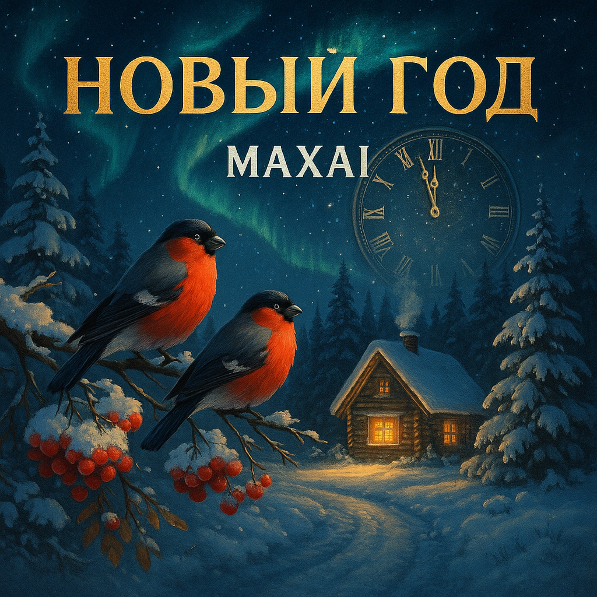

27.11.2025
Белый снег ложится на дорогу,
Тихо, словно сказка наяву.
В этот миг уходят все тревоги —
Я снежинки на ладонь ловлю.
Снегири алеют на рябине,
Свиристели взмыли в небеса.
А синицы с воробьями в спешке
Крошки собирали у крыльца.
Это снова ночь, где всё возможно,
Это миг, когда весь мир родной.
Скоро бой часов — и невозможно
Не поверить в праздник всей душой!
Ёлки в снегу у лесной опушки,
Гирлянды сверкают в вечерний мороз.
Хрустит под ногами лёд у избушки —
Скоро подарки и Дед Мороз.
Все вокруг обрадовались снегу —
И зверьё, и птицы, и народ.
Мы забыли осень понемногу —
А теперь встречаем Новый Год!
Это снова ночь, где всё возможно,
Это миг, когда весь мир родной.
Скоро бой часов — и невозможно
Не поверить в праздник всей душой!
Пусть огни рассыплются по свету,
Зазвучит весёлый детский смех.
Новый Год приносит нам надежду —
Пусть мечты сбываются у всех!
До прослушивания: Лёгкая усталость от года, ожидание перемен, желание тепла и простых радостей.
После прослушивания: Уют, светлая надежда, ощущение праздника и веры в добро — как будто мир снова стал родным.
«Новый год» — это песня о том моменте, когда тревоги отпускают, и ты вспоминаешь: счастье — рядом. Снег, птицы, огни, бой часов — всё собирается в одну мысль: надежда возвращается, и мечтам можно дать шанс.
Куплеты — зимние картинки и наблюдения, создающие атмосферу (снег, птицы, двор, мороз).
Припев — главный эмоциональный подъём: «ночь, где всё возможно», вера в праздник всей душой.
Финал — закрепляет надежду и пожелание, чтобы мечты сбывались у всех.
Рассказчик — человек, который смотрит на зиму глазами ребёнка, но с опытом прожитого года. Интонация спокойная и тёплая: не пафос, а искреннее «стало легче дышать», когда вокруг появляется праздник.